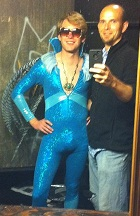

PRODUCTION HISTORY

Episode 1: "Competition"
April 2009 - St. Nick's Pub, LA, CA
Episode 2: "Health and Wellness"
June 2009 - St. Nick's Pub, LA, CA
Episode 3: "Communication"
Sept. 2009 - St. Nick's Pub, LA, CA
Special Halloween Performance
Oct. 31, 2009 - Spaceland, LA, CA
Episode 4: "The Holidays"
December 2009 - St. Nick's Pub, LA, CA
Episode 5: "Love and Death"
March 2010 - Café-Club Fais Do-Do, LA, CA
Episode 6: "America"
June 2010 - Fringe Central at
The Hollywood Fringe Festival, LA, CA
Episode 7: "Childhood"
October 2010 - Café-Club Fais Do-Do, LA, CA
Café Was
December 5, 2010, LA, CA
Episode 8: "The 1976 KTSH Holiday Bash"
December 2010 - Café-Club Fais Do-Do, LA, CA
Special Performance
"The Valentine's Day Radio Fundraiser Spectacular"
February 12, 2011 - Café-Club Fais Do-Do, LA, CA
The Super Serious Show
March 17, 2011 - Smashbox Studios, LA, CA
Episode 9: "Faith and Belief"
March/April 2011 - Café-Club Fais Do-Do, LA, CA
The Satellite
with special guests The Mortified After School Orchestra
May 22, 2011, LA, CA
Episode 10: "Travel"
June 2011 - Fringe Central at
The Hollywood Fringe Festival, LA, CA
Special Repeat Performance
August 2011 at the Best of Hollywood Fringe
Lost Moon Radio presents
ROGER WODEHOUSE'S ANDROGYMNASIUM
September-October 2011 - Café-Club Fais Do-Do, LA, CA
Episode 11: "Rebels and Outlaws"
December 2011 - Café-Club Fais Do-Do, LA, CA
The Hammer Improv 3-Year Anniversary Extravaganza
February 17, 2012 - Café-Club Fais Do-Do, LA, CA
The 33rd Annual LA Weekly Theater Awards
April 2, 2012 - Avalon Hollywood, LA, CA
The Lost Moon Radio All-Request Hour
April 18, 2012 - King King, LA, CA
Episode 12: "Night"
June 2012 - Fringe Central at
The Hollywood Fringe Festival, LA, CA
Special Repeat Performance
July 2012 at the Best of Hollywood Fringe